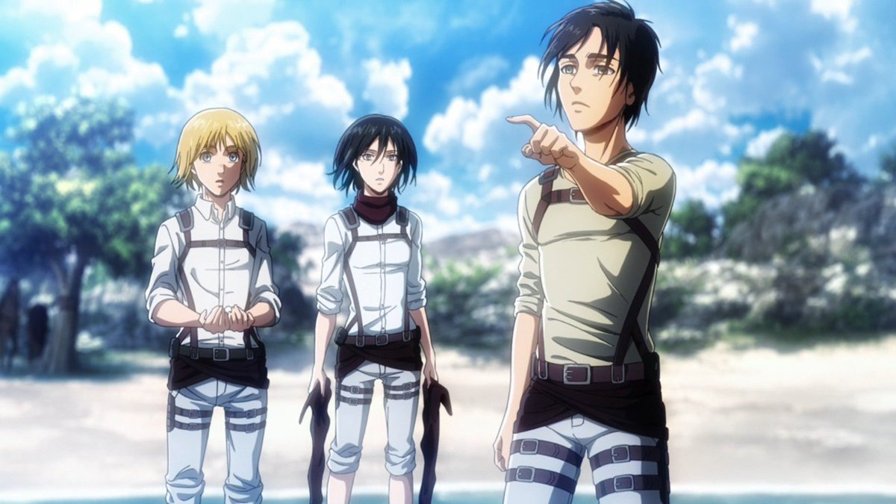

Rationality vs Fatalism in Attack On Titan: The role of Armin to put balance to the series
17 January 2022
Appearing as the most rational character on the anime Series Shingeki No Kyojin (aka Attack on Titan), Armin led Eldia to many triumphs using his rational thinking and tactics all over the first three seasons. While the two other main characters, Mikasa and Eren, were bound to their instinctual fate, believe that everything they do is already scripted, so they do it with certainty we see among fanatics.
“I think I have no choice”, Mikasa Ackerman
The vision becomes the dogma, and one should live to fulfill the vision whatever the cost is, even at the cost of sacrificing lives
“I… have always been this way. Ever since I was born” , uttered Eren Jaeger, which confirms that Eren is not a subject to be a “special person”. He is what he is with a predestined fate, and he is not trying to go against what his destiny seems to be. On the contrary, he is setting for himself destiny as a clear path, a clear guidance.
Armin is the only character among these Trio ( Eren, Mikasa, Armin) who’s pushing the boundaries of his own limitations and thinking outside of the box to find a solution that can save Eldia and keep it prosperous, displaying humanitarian characteristics such as hope, dream and freedom.
On the other side, comes Eren who completely lost faith in freedom of will starting from season 4, he says at the ending of the season 3, “If we kill all our enemies over there, will we finally be free ?” Eren was convinced afterwards that freedom is just a myth and realized that life is a subject of fatality.
In my opinion, these conflicts are what makes Attack on titan full of emotions, beauty and complexity at the same time. “What is the Truth ? What to believe” Red Swan, Season 3 Opening.
I honestly still have not read the manga and have no clue how the story will evolve in season 4 part 2, but let’s see what will happen in the next episodes.
On a final note, Attack on Titan also displays even more complex contradictions like individualism versus nationalism, and raising questions on what it's like to be a hero especially in season 4 with Gabi, Falco, Reiner, Magath and Eren. This anime is an open territory to explore and dive deep into philosophical, cultural and psychological topics.